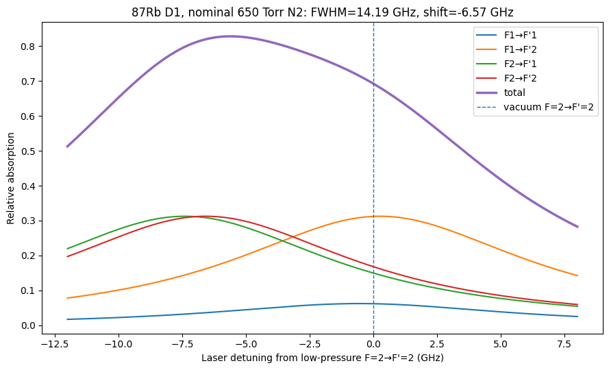

T/03 — OPTICAL PUMPING IN A 650 TORR N2 CELL
650 Torr N₂ 셀에서의 광펌핑
고압 완충기체가 D1 선을 14 GHz로 넓히고 6.6 GHz 붉은쪽으로 밀면, 저압에서 잡은 잠금 주파수가 셀 안에서는 다른 전이 위에 놓입니다. 그 결과를 제출받아 검토한 기록.
01 — 무엇을 물었나
저압 포화흡수분광으로 F=2→F′=2에 잠근 레이저를 650 Torr 셀에 그대로 넣으면 무슨 일이 일어나는가. 그리고 자력계가 원하는 |F=2, m_F=+2⟩를 최대로 만들려면 어디에 맞춰야 하는가.
02 — 근거
- 출처에 적혀 있는 값
- 다른 값에서 유도된 값
- 근거를 밝힌 가정
- 그림을 위한 것, 물리적 주장 없음
- CALC
650 Torr(20 °C 충전)는 0.7969 amagat
(650/760)×(273.15/293.15) = 0.7970. 제출값 0.7969와 일치합니다.
- CALC
그 밀도에서 D1 FWHM은 14.19 GHz
17.8 GHz/amagat × 0.7969 = 14.185 GHz. 계수 출처는 MEMS alkali vapor cell paper (Zotero LFQICUA7, 2025) — Rb D1 by N2, 17.8 GHz/amagat
- SRC
압력 이동은 −6.575 GHz
제출받은 계산 (외부 세션, 2026-09-10). 이 항목이 검토한 대상입니다. — −8.25 GHz/amagat을 Romalis 등에 귀속. 원 논문은 유료 장벽 뒤라 제가 직접 확인하지 못했습니다.
- CALC
저압 F=2→F′=2 잠금 주파수는 고압 셀에서 F=1 흡수군의 한복판에 놓인다
네 전이 중심을 제출값의 입력만으로 다시 계산해 −0.557 / +0.260 / −7.391 / −6.575 GHz를 재현했습니다. 최대 차이 1 MHz.
- CALC
D1 초미세 선강도는 S₁₁=1/6, S₁₂=5/6, S₂₁=S₂₂=1/2
각 F에 대해 F′ 합이 1이 되는지 확인했습니다 — 1/6+5/6=1, 1/2+1/2=1.
- SRC
D1 진동자 강도 f = 0.342 31(33)
Steck, Rubidium 87 D Line Data, rev. 2.3.4, input/papers/steck-rb87-d-line-data-r2.3.4.pdf — 현행 개정판에 그대로 있습니다
- CALC
100 °C 도플러 폭 0.560 GHz
제 T/02가 독립적으로 0.5597 GHz를 냈습니다. 14.19 GHz 압력 폭에 비해 작습니다.
- CALC
여기상태 초미세 분리로 쓴 0.816656 GHz는 Steck의 이전 개정판 값이다
816.656 = 2 × 408.328 MHz. 현행 rev 2.3.4의 A(5²P₁/₂)는 407.25(63) MHz이므로 2A = 814.50(126) MHz. 차이 2.156 MHz.
- INF
바닥상태 이완 Γ_g = 170 s⁻¹과 quenching 지배 가정
제출 계산이 스스로 '보수적으로' 넣었다고 밝힌 모델 입력입니다. 측정값이 아니며, 아래 최적 detuning은 이 가정 위에 서 있습니다.
03 — 어떻게 했나
- 01
밀도와 폭·이동을 다시 계산
충전 압력을 amagat으로 바꾸고 넓힘·이동 계수를 곱해 제출값을 재현했습니다.
- 02
네 전이의 중심을 다시 놓는다
바닥 6.8347 GHz와 여기 0.8167 GHz 간격에서 저압 위치를 세우고, 모든 선에 같은 압력 이동을 더했습니다.
- 03
입력의 출처를 되짚는다
각 숫자가 어느 문서의 어느 표에서 왔는지 확인하고, 확인되지 않는 것은 그렇게 표시했습니다.
- 04
모델 가정과 결과를 분리한다
재현 가능한 산술과, 가정 위에 선 결론을 다른 증거 등급으로 나눴습니다.
04 — 수치
| 값 | 크기 | 등급 | 출처 · 식 · 근거 |
|---|---|---|---|
| N₂ 밀도 | 0.7969amagat | CALC | 650 Torr, 20 °C 충전 |
| D1 FWHM | 14.19GHz | CALC | 17.8 GHz/amagat × 0.7969 |
| 압력 이동 | −6.575GHz | SRC | −8.25 GHz/amagat, 제가 원 논문을 확인하지 못한 계수 |
| F=1→F′=1 중심 | −0.557GHz | CALC | 저압 F=2→F′=2 기준 |
| F=1→F′=2 중심 | +0.260GHz | CALC | 같음 |
| F=2→F′=1 중심 | −7.391GHz | CALC | 같음 |
| F=2→F′=2 중심 | −6.575GHz | CALC | 같음 |
| R(F=1)/R(F=2) at δ=0 | 1.96 | SRC | 제출 계산의 결과. 제가 독립적으로 재현하지는 않았습니다 |
| |2,+2⟩ 최적 detuning | −3.6GHz | INF | 1–10 mW/cm²에서 −3.69 ~ −3.62로 안정적. Γ_g = 170 s⁻¹ 가정 위의 결과입니다 |
| 1 ms 펄스, 20–30 mW/cm² | 0.915–0.959P(2,+2) | INF | 같은 모델을 1 ms 적분. 2 mm 빔이면 0.63–0.94 mW |
| 여기 HFS 표기 차이 | 2.156MHz | CALC | 816.656(이전 개정판) − 814.50(현행). 전이 표에 미치는 영향은 2 MHz 수준 |
05 — 그림과 수식

이 셀의 완충기체 밀도
CALCSTD표준 결과 — amagat 정의, T(봉입) = 293.15 K
여기서 나오는 선폭
CALCREADWang et al. 2025, Microsyst. Nanoeng. 11 153 — T/02와 같은 계수
원 출처는 Seltzer 2008이며 이 저장소에 없습니다.
압력 이동
INFNAMEDSeltzer 2008, Princeton 박사논문 — 추적하지 못했습니다
이 항목에서 출처를 대지 못하는 유일한 수입니다. 검토한 제출 계산이 쓴 값이고, 원 논문을 확인하지 못했습니다. 넓힘 계수 17.8이 Seltzer 논문에서 왔으므로 이동 계수도 같은 표에 있을 가능성이 높지만, 확인하기 전까지는 INFERRED입니다. 최적 detuning이 −3.5 GHz 근처에 오는 것이 전적으로 이 수에 달려 있습니다.
네 개의 초미세 전이 중심
CALCHELDSteck, Rb-87 D Line Data r2.3.4 — 표 5의 A 상수, ΔE(hfs) = A(I+½)
Δ(바닥 초미세) = 6.834682610904 GHz는 A(5²S₁/₂)×2에서. Δ(여기 초미세) = 2A(5²P₁/₂) = 814.50(126) MHz — 개정판마다 다르므로 아래 정정 기록을 보십시오.
왜 초미세구조가 사라지는가
CALCSTD표준 결과 — 위 두 값의 비
선폭이 바닥상태 분리의 두 배입니다. 네 전이가 하나의 봉우리로 뭉치고, 그래서 detuning 하나로 F=1과 F=2를 동시에 다루게 됩니다.
전이 중심 네 개는 이 네 줄만으로 나옵니다. 제출값을 이 식으로 다시 계산해 대조했습니다.
허용오차 재현한 전이 중심의 최대 차이 1 MHz
06 — 검증
PASS — 산술은 재현됨, 결론은 가정에 의존
| 검사 | 결과 | 방법 |
|---|---|---|
| 밀도 환산 | 0.7970 vs 0.7969 | 직접 계산 |
| 넓힘·이동 | 14.185 / −6.575 GHz | 계수 × 밀도 |
| 전이 중심 4개 | 최대 Δ 1 MHz | 제출값의 입력만으로 독립 재계산 |
| 선강도 규격화 | PASS | 각 F에 대한 F′ 합 = 1 |
| 도플러 폭 | 0.5597 vs 0.560 GHz | 제 T/02가 독립적으로 계산한 값과 비교 |
| 진동자 강도 | 0.342 31(33) 확인 | 현행 Steck 본문에서 직접 확인 |
| 여기 HFS 출처 | 이전 개정판 값 | 816.656 = 2 × 408.328. 현행은 407.25(63) |
07 — 정정 기록
제출 계산이 여기상태 초미세 분리를 0.816656 GHz로 쓰고 Steck에 귀속했습니다. 현행 개정판 값은 814.50(126) MHz입니다.
08 — 아직 모르는 것
- −8.25 GHz/amagat 압력 이동 계수를 원 논문에서 확인하지 못했습니다. 넓힘 계수는 서로 다른 두 문헌이 일치하지만, 이동 계수는 한 곳에서만 왔습니다.
- Γ_g = 170 s⁻¹과 quenching 지배 여기상태는 측정이 아니라 모델 입력입니다. −3.6 GHz라는 최적점은 그 가정과 함께 서고 함께 무너집니다.
- R(F=1)/R(F=2) = 1.96과 인구 표는 제가 독립적으로 재현하지 않았습니다. 재현한 것은 스펙트럼 쪽 산술입니다.
- 제출 계산이 스스로 지적했듯 셀 전체에서 펌프 세기가 균일하다고 가정했습니다. 5.5 mm 경로에서 광학 깊이가 100 °C 0.93, 120 °C 3.15, 150 °C 15.7까지 커지므로 120 °C 이상에서는 공간적 펌프 고갈을 무시할 수 없습니다.
- 따라서 다음 단계는 Beer–Lambert 전파와 국소 펌핑을 함께 푸는 것이고, −3.6 GHz가 공간 효과에서 얼마나 움직이는지는 아직 모릅니다.
- T/06이 이 항목을 두 군데 고쳤습니다. 공간적 펌프 고갈의 문턱은 OD 3이 아니라 OD 10 근처(30 mW/cm²에서 약 141 °C)이고, 여기 적힌 광학 깊이 0.93·3.15·15.7은 천연 존재비 계산의 2.49배입니다 — 농축 셀이면 맞고, 아니면 맞지 않습니다.
09 — 산출물
assets/diagrams/rb87-650torr-pumping.png제출받은 계산 결과 그림analysis/t03-review.json제가 재현한 값과 제출값의 대조표input/papers/steck-rb87-d-line-data-r2.3.4.pdf선강도·진동자 강도·초미세 상수의 출처
10 — 이 항목이 기대고 있는 출처
STD표준 결과 — 원전을 이 저장소가 갖고 있지 않음수식 2개
원전을 갖고 있지 않습니다. 대신 항등식으로 검사합니다
논란의 여지가 없고 인용할 논문을 특정하기에는 너무 오래된 결과들에 씁니다: 3-j·6-j·Wigner d의 Racah 공식, Liouville–von Neumann 방정식, Beer–Lambert 흡수, Voigt 프로파일, 도플러 폭, amagat 정의. 갖고 있지도 않은 교과서를 인용하는 것보다 갖고 있지 않다고 적는 편이 낫습니다. 대신 이들은 전부 기계적으로 검사합니다 — 해당 항목의 검증 절을 보십시오.
READThe fabrication of MEMS alkali metal vapor cells based on ultrafast laser welding for single beam magnetometer수식 1개
doi:10.1038/s41378-025-00976-6
저자의 문헌 라이브러리에 있고, 이 주장을 위해 읽었습니다
측정한 36.50 GHz 폭을 2.05 amagat으로 바꾸는 데 Rb D1의 N₂ 압력 넓힘 계수 17.8 GHz/amagat을 쓰고, 그 계수를 자기 참고문헌 43번인 Seltzer의 박사논문에 돌립니다. 즉 이 저장소가 그 수를 읽은 곳이지, 그 수가 측정된 곳이 아닙니다.
NAMEDDevelopments in alkali-metal atomic magnetometry수식 1개
https://www.proquest.com/docview/275671021
이 저장소에 없습니다. 갖고 있는 다른 출처가 지목한 것입니다
갖고 있지 않습니다. wang2025의 참고문헌 43번이 17.8 GHz/amagat의 출처로 지목한 문헌이고, 그 참고문헌 항목은 직접 확인했습니다. 다만 Seltzer가 그 수를 어느 원 측정에서 가져왔는지는 이 저장소가 모릅니다 — 논문을 열어보지 않았습니다. 알칼리–완충기체의 넓힘·이동·스핀파괴·확산 계수를 모아놓은 표준 편찬물이므로, 끝내 추적하지 못한 −8.25 GHz/amagat 이동 계수도 같은 표에 있을 가능성이 높습니다. 이 논문 하나를 구하면 여러 항목의 미해결 항목이 한꺼번에 닫힙니다.
HELDSteck, Rubidium 87 D Line Data수식 1개
https://steck.us/alkalidata
input/papers/steck-rb87-d-line-data-r2.3.4.pdf이 저장소에 있습니다
식에 번호가 붙어 있어서, 아래 인용은 전부 특정 식 번호를 가리킵니다. 다만 Steck 자체가 편찬물입니다 — Steck이 어떤 식을 원 논문에 돌리는 경우, 그 사실을 각 수식의 설명에 적었습니다.